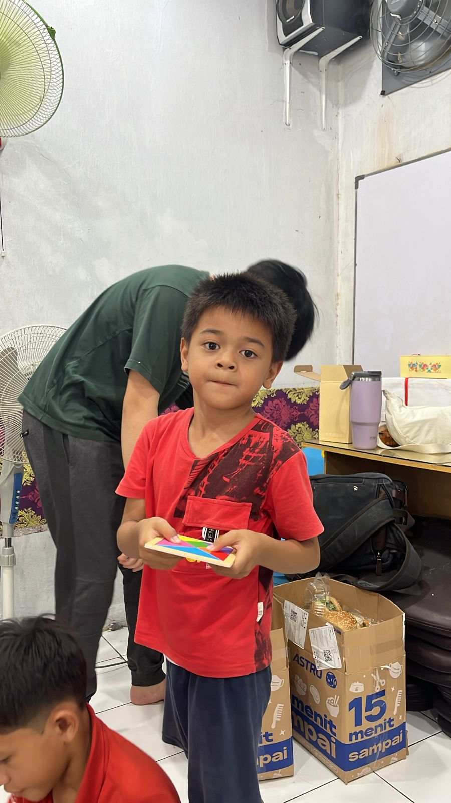
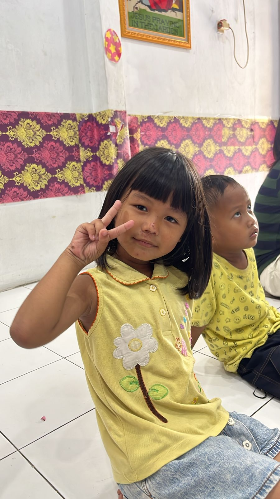

Rumah Singgah untuk anak-anak Sewan, Tangerang — hadir sejak 2013.
Pendidikan gratis dan kepedulian kesehatan untuk anak-anak di Sewan, Tangerang — oleh dan untuk komunitas setempat.
2013
Tahun berdiri
Sewan
Tangerang, Banten
Gratis
Seluruh program pendidikan
Galeri Cita-Cita
Setiap anak punya mimpi. Di sini, kami belajar bersama-sama untuk membuat mimpi itu terasa mungkin.

D.
Cita-cita: Jadi dokter
D. selalu datang 15 menit lebih awal. Katanya takut ketinggalan penjelasan pertama.

R.
Cita-cita: Jadi guru
R. paling suka waktu belajar lagu bahasa Inggris. Katanya lebih mudah diingat kalau sambil nyanyi.
Program Kami
Dua program inti yang sudah berjalan sejak awal. Sederhana, konsisten, dan nyata.

Pendidikan Gratis
Kelas Matematika dan Bahasa Inggris gratis untuk anak-anak usia sekolah dasar di sekitar Sewan. Diajar langsung oleh relawan mahasiswa.
Pelajari lebih lanjut →
Layanan Kesehatan Gratis
Pemeriksaan kesehatan dasar dan edukasi gizi untuk anak-anak binaan. Bersama relawan dokter yang hadir secara sukarela.
Pelajari lebih lanjut →Kebutuhan yang Tidak Pernah Berubah
Beberapa kebutuhan dasar yang selalu kami butuhkan — kapan pun. Untuk kebutuhan spesifik bulan ini, hubungi kami via WhatsApp.
- Buku pelajaran SD (Matematika, Bahasa Indonesia)
- Alat tulis kantor (ATK) — pensil, buku tulis, penghapus
- Susu pertumbuhan untuk anak
Apa Kata Mereka?
"Tempat yang benar-benar peduli sama anak-anak kampung sini. Bukan cuma ngajar, tapi beneran kenal satu-satu sama anak-anaknya."
"Saya volunteer di sini selama satu semester. Koordinasinya bagus, dan anak-anaknya semangat banget belajar. Recommended buat yang mau volunteer meaningful."
"Anak saya jadi lebih percaya diri sejak ikut kelas di sini. Gurunya sabar, tempatnya aman, dan gratis. Alhamdulillah ada tempat seperti ini di Sewan."
Siap bergabung bersama kami?
Tidak perlu keahlian khusus. Cukup hadir, mau belajar bersama, dan peduli pada anak-anak Sewan.
Intip momen di lapangan
Foto nyata dari kegiatan kami setiap minggu di Sewan, Tangerang.